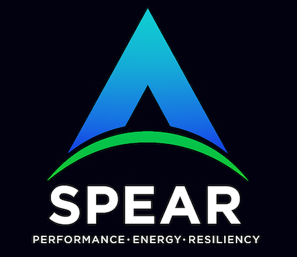

MATTHEW T. DEARING

Ph.D. Candidate
Department of Computer ScienceCollege of Engineering
University of Illinois Chicago

mdear2 (AT) uic.edu
Chicago, Illinois

Matthew is a Ph.D. Candidate in Computer Science at the University of Illinois Chicago working within the SPEAR Lab. His research explores the development of innovative AI approaches to enhance the operations of high-performance computing (HPC), including advanced scheduling algorithms, deep learning models for simulations, and generative AI with large language models (LLMs).
With a B.A. in Physics and M.Sc. in Computer Science, Matthew is also a full-time enterprise software engineer and Technical Lead for the Artificial Intelligence for Operations (AIOps) initiative at Argonne National Laboratory with a Joint Appointment as a CASE Staff At-Large in the Department of Computer Science at the University of Chicago.
Matthew has taught at the university level since 2002, most recently as an Adjunct Instructor in Computer Science at the University of Illinois Springfield, where he taught undergraduate and graduate courses online, including a graduate course in Deep Learning. He also designs and delivers AI literacy programs at Argonne and runs generative AI tutorials and student hackathons at the ACM Richard Tapia Conference.
Matthew's early research involved fabricating the original holographic optical device for manipulating microscopic matter in three dimensions [Rev. Sci. Instrum. 2001] and developing software to map the structure of cultured neuron networks [ICCS 2002]. Today, Matthew leverages state-of-the-art AI and machine learning in IT systems for applications in operations and studies advanced techniques in high-performance computation resource management and automated optimum process scheduling.